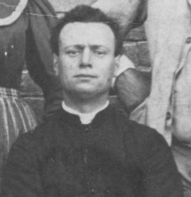

Luigi Grandi, senese, è stato parroco a Quercegrossa nella prima metà del Novecento in un periodo in cui furono vissuti eventi eccezionali, dalla guerra alla lotta politica, e che lui affrontò con bonaria disposizione lasciando la sua chiesa aperta a tutti, rifuggendo lo scontro, figlio della faziosità e dell’appartenenza: per questo venne rispettato da tutti e l’opinione del popolo fu sempre positiva. Le vecchie generazioni, le quali hanno trascorso la loro adolescenza e gioventù con questo uomo pacifico e aperto al progresso, ma per tanti aspetti legato ad una mentalità antica di parroco di campagna ottecentesco che si portò dietro fino ai suoi ultimi giorni, lo rammentano con affetto. Visse a Quercegrossa per quarantatre anni.
Con le sue stesse parole si presenta don Luigi. Le scrisse il 29 marzo 1930 per il curriculum richiesto dalla Curia ad ogni sacerdote, e si possono completare con gli essenziali dati sulla sua famiglia, pigionale in S. Martino a Siena, e la professione del babbo di muratore.
Quercegrossa 29 marzo 1930 - VIII
Don Luigi Grandi di Amos e Rosa Marchetti. / Nato l'8 agosto 1877 a Siena;
vestizione dell'abito ecclesiastico il 16 giugno 1892 e Ordinato il 2 marzo 1901;
tonsura 19 settembre 1896;
lettore e ostiariato: 18 settembre 1897 / esorcista e accolito: 24 settembre 1898;
suddiacono il 23 settembre 1899 con dispensa; / diacono 22 settembre 1900;
sacerdote 2 marzo 1901 con dispensa del difetto di tempo in forza di apostolico rescritto, inviato quindi cappellano alla chiesa delle Cappuccine in Siena il dì 15 agosto dello stesso anno; nominato Economo Spirituale alla Pieve del Ponte allo Spino con Decreto arcivescovile del dì 29 ottobre 1904; ottenuta la nomina di Economo Spirituale, previo concorso canonico, della Cura dei SS. Giacomo e Niccolò a Quercegrossa il dì 25 maggio 1908 fu investito del detto Benefizio il dì 14 febbraio 1911 e tuttora vi si trova.
Don Luigi assunse inizialmente l’incarico a Quercegrossa come economo spirituale nel 1908, preceduto da don Calamati e don Luigi Gori, e soltanto tre anni dopo ricevette la nomina a parroco effettivo. Egli fu l’ultimo parroco ad esser soggetto a concorso per ottenere l’investitura della parrocchia di Quercegrossa.
Con la morte di don Rigatti la parrocchia passò sotto l’amministrazione del Subeconomato dei benefici vacanti di Siena e soltanto il 16 luglio 1907, ossia con un ritardo di sei mesi, vennero affissi gli editti per il concorso alla vacante parrocchia. Ma il concorso andò deserto, nonostante l’editto sia stato visibile per ben 22 giorni
“nei tabelloni di questa Curia”: erano finiti i tempi in cui vi partecipavano dieci sacerdoti per vincere la ricca parrocchia di Quercegrossa. Dopo alcuni mesi, il 25 novembre 1907, i bandi furono ripubblicati e finalmente si ebbero tre candidature.
La mattina dell’11 dicembre, alle ore 8, don Luigi Grandi insieme ad altri due concorrenti, don Armido Pometti e don Angelo Selvatici, venne introdotto nella sala degli esami nel Palazzo arcivescovile e gli furono letti dal cancelliere assistente i casi Teologici e morali proposti dai tre Rev.mi Sigg. Esaminatori prosinodali debitamente eletti nelle persone del sacerdote Stefano Corbini, Pier Agamennone Alessandri e Cipriano Verdini.
“Terminate le soluzioni in inscritto furono le medesime chiuse e sigillate di mano in mano in plichi separati alla presenza dei Concorrenti dal prefato Cancelliere dal quale foste invitato con gli altri concorrenti a presentarsi la mattina del giorno successivo nel Palazzo Arcivescovile per la lettura e qualifica degli esami stessi… alla presenza di Mons. Arcivescovo Benedetto Tommasi ... e dei tre Rev.mi Esaminatori … con dichiararsi voi abile ed idoneo ad ottenere e ritenere la detta Parrocchia dei SS. Giacomo e Niccolò a Quercegrossa”.
Il Grandi ottenne la votazione di 7 bianchi e 2 neri Al seguito di ciò, mons. Arcivescovo con decreto del 16 dicembre 1907 gli conferiva la parrocchia ordinandone la canonica investitura, ma, caso strano, il 25 maggio 1908 veniva nominato soltanto economo spirituale. Si può pensare che non tutto sia filato liscio perchè la vicenda si trascinò per anni e si deve arrivare al 22 settembre 1911, quando don Luigi, accompagnato dal Subeconomo e dai testimoni Luigi Roncolini e Clelio Panni, ricevette la materiale consegna della parrocchia a seguito della Bolla arcivescovile del 14 febbraio 1911 e del R. Placet del 29 marzo 1911. Gli venne anche ufficialmente fatto sottoscrivere per accettazione il verbale dove erano riassunte le rendite nette della parrocchia assommanti a lire 791,89, di cui lire 1389,06 di entrate, e lire 597,17 di uscite. Anche a don Luigi fu concesso di istituire il fondo di garanzia in rate mensili. Non c’era da stare tranquilli per l’economia parrocchiale, quando don Luigi ne prese possesso, perchè oltre alle rate annuali della garanzia pagava tasse per un importo di 350 lire cosi elencate: Imposte sui fabbricati: 69,59; Sui terreni 30,19; Redditi di ricchezza mobile 201,36; Tassa di manomorta 42,66 (tassa sui beni ecclesiastici che non trasmettendosi in eredità sfuggivano ad ogni tassazione). Si aggiungeva inoltre la vecchia rata del prestito per la ristrutturazione del complesso parrocchiale di Lire 150. Le entrate erano costituite da rendite di censi, libretti, debito pubblico ecc. per circa 900 lire. In quegli anni 1910/11, sempre alla ricerca di fondi e al guadagno di spazio all’interno della piccola chiesa, venne suggerito dalla soprintendenza e dall’economo stesso il trasferimento della cantoria e della pietà e, dopo il restauro, la loro sistemazione in Siena in una chiesa più adatta a contenerle. Inoltre, da una perizia tecnica fu proposto di abbattere gli archi costruiti da don Bianciardi, ora lesionati, e solo la mancanza di fondi impedì tutte queste manovre.
Don Luigi Grandi portò avanti il suo incarico di parroco svolgendo i compiti richiesti dal suo ufficio, ligio ai canoni e alla tradizione, senza mai eccedere. Celebrava la sua messa “alla solita mezzoretta di sole”, le funzioni pomeridiane con qualche predicatore per le feste e amministrava sacramenti come si doveva e insegnava personalmente il catechismo, da lui considerato come base della sua pastorale. In breve, un parroco di campagna rifuggente il chiasso, con le sue abitudini e i piccoli vizi nascosti come ricorda Pierugo:
“Don Luigi non fumava in pubblico, ma soltanto nel suo angolo di casa preferito che era il gabinetto del chiostro. Fumava la pipa e le spuntature (resti del taglio dei sigari venduti regolarmente all'appalto),
e per un'ora seduto sulla tavola di legno spariva alla vista. In tempo di guerra ci fu una carenza di spuntature e don Luigi ricorse alle foglie di una pianta secca, detta "spigolo", che egli raccoglieva ai cipressini e trinciava per la fumata quotidiana”.
La bronchite cronica che l’affliggeva da anni lo fiaccò prima del tempo e le celebrazioni liturgiche lo spossavano, ma mai venne meno ai suoi doveri di parroco; negli ultimi anni dopo messa era solito gettarsi nella sua poltrona sbuffando come dire “finalmente!”. Comunque don Grandi tenne la sua piccola chiesa in ordine come si doveva e nella visita pastorale del 1920 non gli vengono mossi appunti:
“Alle ore 18 S.E. fa normalmente l'ingresso in Chiesa con grande concorso di popolo e compie tutte le consuete Funzioni della S. Visita ed amministra la S. Cresima. La chiesa avrebbe bisogno di restauri, gli altari però sono in regola: e nella Sacristia i parati, reliquiari ecc. ben conservati”. D’altronde don Grandi ebbe modo di apprezzare il popolo di Quercegrossa trattandosi di semplici e pacifiche famiglie operaie e contadine che mai gli recarono fastidio, e di possidenti come i Cerpi, i Mori assai vicini alla Chiesa in tempi nei quali la religiosità era molto diffusa e il contegno in chiesa devoto e le donne stavano ancora separate dagli uomini e a capo coperto, come don Luigi dichiara in un questionario del 1910, e per Pasqua tutte le donne (o quasi) si comunicavano e pochissimi uomini non si accostavano alla comunione. Non c’erano in parrocchia coppie sposate col solo rito civile e tutti erano battezzati, nè circolava stampa cattiva come invece avveniva a Vagliagli, dove erano distribuiti l’Avanti e Siena Nuova, ma solo in qualche famiglia dice il parroco Pacini.
Fin dai primi anni insegna catechismo tutte le domeniche dopo la messa ai fanciulli e sempre la domenica alle 14,30 d’inverno e alle 15,30 dell’estate ai fanciulli e agli adulti. In più
“l’istruzione ai fanciulli si fa ancora in tutti i giorni feriali di Quaresima alla levata del sole”. E’ ricordato il catechismo di don Luigi negli anni Trenta, quando ha ridotto notevolmente il programma detto e insegna catechismo solo nei pomeriggi feriali. Con la canna in mano risentiva meticolosamente le domandine del catechismo ai ragazzi della parrocchia e non esitava a picchiare la lunga canna sulle teste dei più somari e anche percuotere con forza per addomesticare i ragazzi più molesti tra i quali i due Marri Giuliano e Giorgio. A quel tempo teneva il catechismo per la preparazione alla comunione poi, per i ragazzi “finiva tutto”.
Il nostro parroco ha una buona cultura e, pur vivendo in campagna, non si estranea dalla vita nazionale ricevendo in abbonamento il Corriere d’Italia stampato a Roma e il Popolo di Siena.
Come da perizie tecniche anteriori si riteneva necessario far svolgere alcuni lavori nella chiesa e nella canonica, a carico dell’eredità Rigatti, e don Grandi se ne assunse l’obbligo e da diligente parroco, dopo aver ottenuto una proroga, li effettuò nel 1930/31. Rifece completamente l’impiantito di chiesa e la imbiancò:
“Da quanto esposto risulta che il beneficiario ha fatto non solo tutti quei lavori stabiliti all’atto della consegna del beneficio, ma ha fatti lavori di sistemazione e miglioramento assai più razionali superando di gran lunga la spesa di lire 156 che fu depositata per i danni del parroco Rigatti - Siena 1934”. Inoltre restaurò la cantoria rendendola praticabile e funzionale con l’organo preso a Lecceto e pagato alla Curia. L’acquisto dell’organo e il restauro della cantoria od orchestra portò alla formazione di un coro parrocchiale, attivo per le feste maggiori e diretto da Dante Cellesi del Castellare. Il coro si schierava in alto nella cantoria consolidata e sicura, e di lassù si spandevano le voci migliori come quella della mi’ nonna Annunziata. Ricorda Anna Tacconi:
“Alle prove, quando si sbagliava, Dante ci diceva paziente “ridaccapone". Dopo guerra un piccolo gruppo di persone riprese a cantare in Chiesa, ancora non era un coro, ma cantano, e don Luigi sembra non gradisca le nuove laudi e...
"mondo birbone ma che so queste canzonette". Solo con la venuta di don Francesco, come aiuto, si istituisce un coro degno di questo nome. C'erano il Polato il Sestini il Bandini, Silvano ecc. La prima messa cantata a tre voci del Perosi fu la messa del Te Deum:
"S’andò anche in altre parrocchie. Sei, sette uomini, una ventina in tutti con le donne... poi c'entrò la politica..." e finì il primo coro di Quercegrossa dopo pochi mesi di attività. Con don Ottorino e la demolizione della cantoria con il vecchio organo, il coro si trasferisce dietro l’altar maggiore, sotto il fornice, e l’armonium lo accompagnerà in tutte le feste con le famosa “Messa degli angeli” come cavallo di battaglia.
Nel 1943 don Luigi costruìsce il fonte battesimale (vedi Cose d’altri tempi: “Battesimi”), e ricordo i tanti e curiosi aneddoti su questo parroco rintracciabili in “Cose d’altri tempi”. Intanto c’è da dire che era un appassionato di tecnica e meccanica: si fece una radio in casa; mise la luce elettrica in chiesa nel 1932 appena arrivata in paese e anche sugli altari, cosa proibitagli dall’arcivescovo Toccabelli nella visita del 1941; acquistò una Balilla, che gli guidava Dino Mori, e ricorreva a tante piccole e ingegnose invenzioni come quella esemplare mirante a risparmiare l’olio della lampada al Santissimo e per il Giovedì Santo (vedi Cose d’altri tempi: “Cose di Chiesa”).
Secondo la voce popolare, che lo considerava “un cervellone”, fu l’inventore del semaforo, ma questa è soltanto una leggenda campagnola.
Alcuni ricordano le sue passeggiate ai Cipressini col breviario in mano alla don Abbondio, e udire in lontananza le campane di Lornano suonare mezzogiorno; allora si affrettava alla canonica per suonare a sua volta, quando mancava campanario Bernardeschi.
Naturalmente, come per i precedenti parroci, anche gli anni di don Luigi furono movimentati fin dall’inizio da una certa vivacità amministrativa relativa ai rapporti col Subeconomato e altri enti statali, con la Curia, con ingegneri, architetti ecc., atti rimasti in numerose lettere, inventari, preventivi ecc. che qui evito di inserire per non appesantire il testo.
Don Luigi viveva nei primi anni di Quercegrossa con la mamma, vedova, Rosa, che lo lasciò a 71 anni il 4 aprile 1911. In seguito gli fece da perpetua Giulia Bruttini, moglie del suo logaiolo Attilio Bernardeschi, la quale gli preparava il pranzo e lo serviva nel salottino, quella stanza di sinistra all’ingresso, mentre la cucina si trovava a destra. Chiudo questa breve biografia di don Grandi riportando il necrologio elogiativo scritto da chi lo conobbe e che non si discosta dalle valutazione fatte in base alle testimonianze dei popolani:
“Lo distingueva specialmente nell'età giovanile un amore verso la cultura: la Fisica, la Storia civile e dell'Arte, in particolar modo quella patria furono sempre la sua delizia. Dal tratto estremamente gentile, la conversazione fresca e gioviale, era buono con tutti e a tutti dava senza nessunissima preferenza quella sua cordialità e giovialità. Umiltà, semplicità e rettitudine lo hanno accompagnato sempre nella opinione comune e sono state la base del suo apostolato”.
Non posso dimenticare la simpatica espressione “Mondo birbone” che don Luigi intercalava nel suo parlare in ogni circostanza.
Le esequie sul corpo di don Grandi in chiesa; celebra don Luigi Mori attorniato dal popolo.
In basso: il feretro esce di chiesa.
Sopra: i funerali di don Grandi celebrati con grande concorso di popolo si avviano mestamente verso il cimitero parrocchiale di Petroio.
In basso: i preti che ressero provvisoriamente la parrocchia prima dell’arrivo di don Ottorino. Da sinistra: don Sampieri, don Mori, don Pietrino. Al centro Nello Provvedi e i sagrestani Armando Losi (a sinistra), Giuliano Pagni e Fabio Provvedi (a destra)